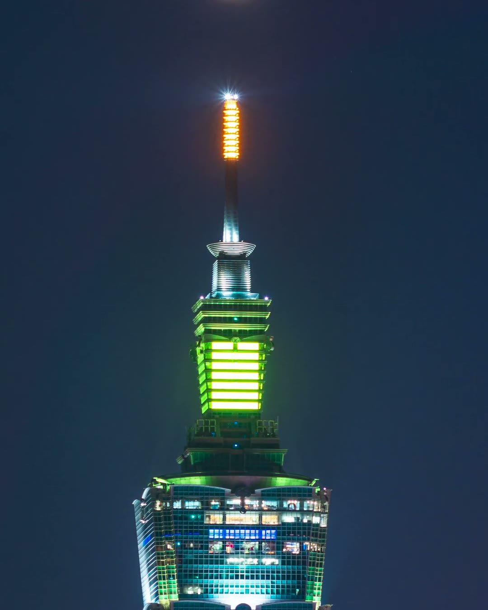
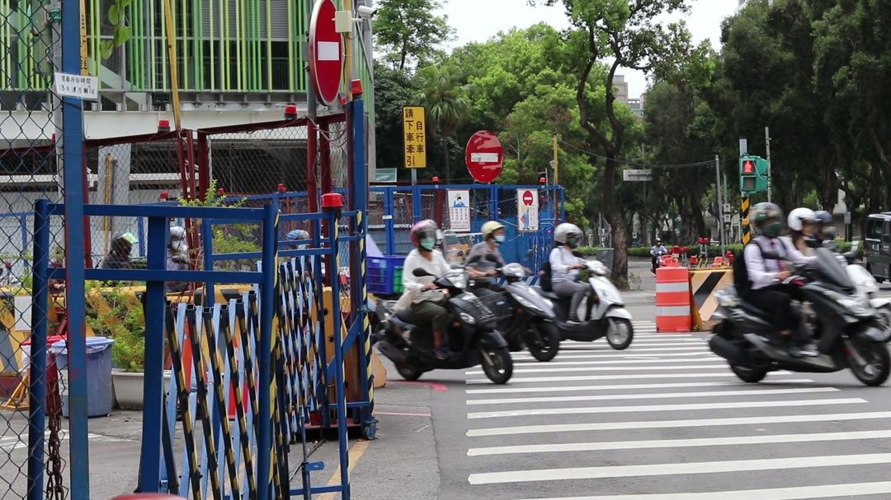
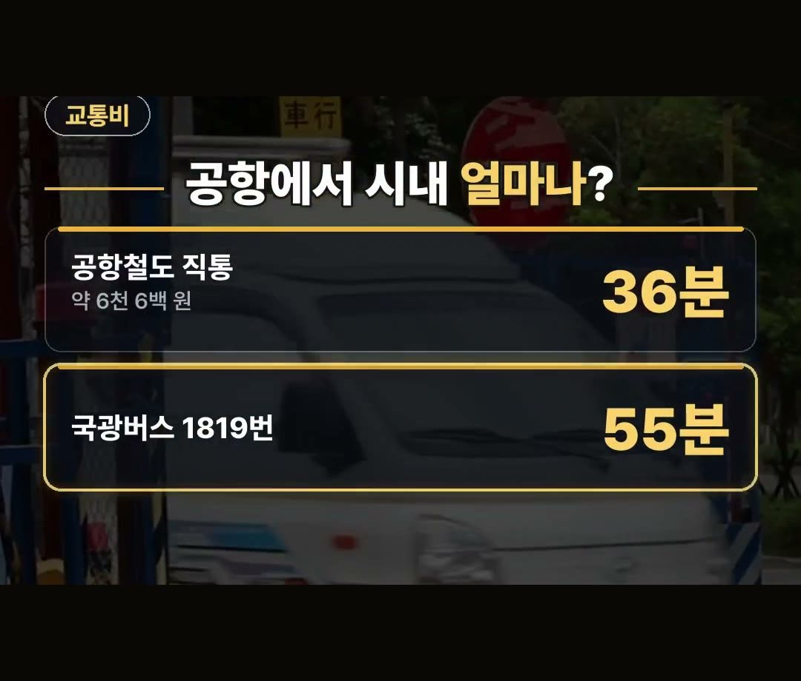
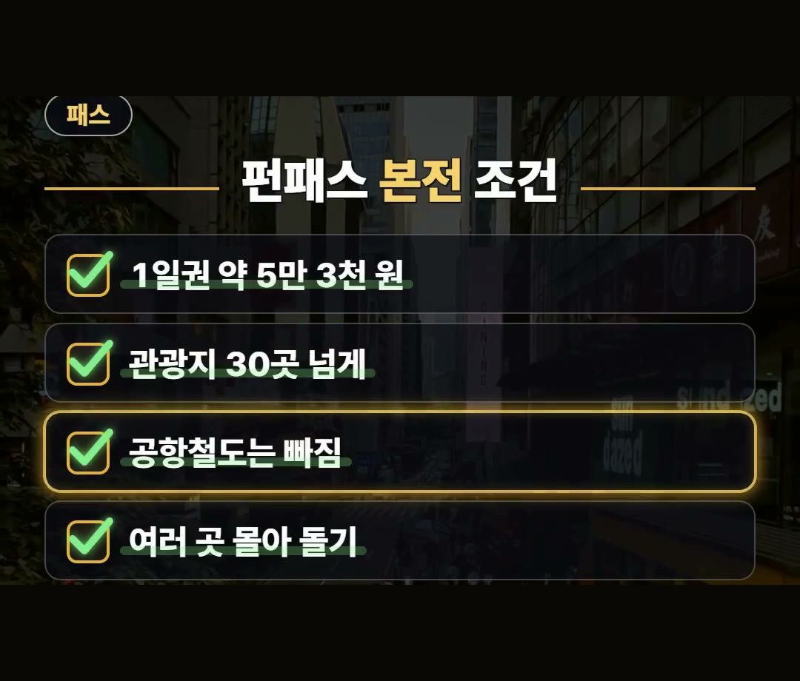
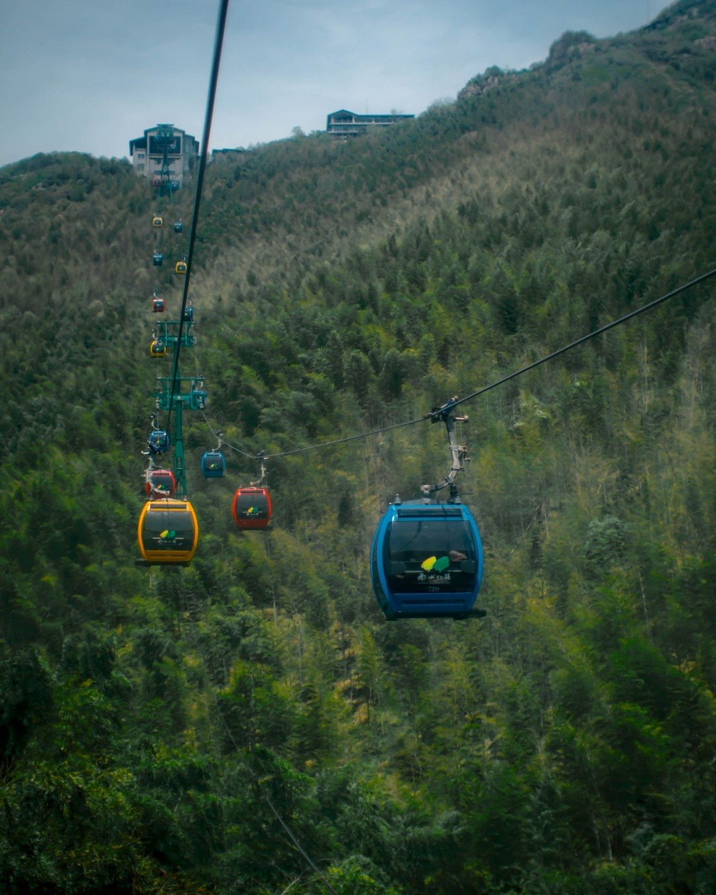
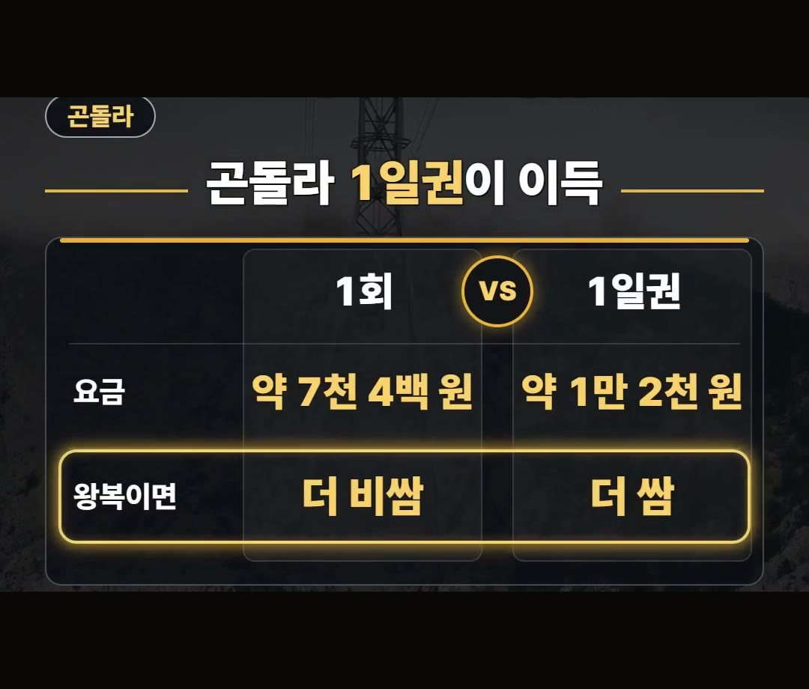

대만 자유여행 | 펀패스·101·곤돌라 뭐가 더 쌀까
※ 이 글에는 제휴 링크가 포함되어 있으며, 링크를 통해 예약·구매하시면 일정 수수료를 받을 수 있습니다. (가격은 같습니다)
※ 이 포스팅은 쿠팡 파트너스 활동의 일환으로, 이에 따른 일정액의 수수료를 제공받습니다.
타이베이 공항에 막 내려 캐리어를 끌면서, 시내 가는 표와 패스, 전망대 표를 어떻게 살지 고민하는 상황을 떠올려 보세요.
대만 자유여행에서는 같은 곳을 가도 표를 낱개로 사느냐 묶어서 사느냐에 따라 내는 돈이 달라질 수 있어요.
이 글에서는 2026년 10월 기준으로 공항 교통편, 펀패스, 101 전망대, 마오콩 곤돌라의 값과 조건을 비교해 드릴게요.
돈 아끼는 연구소의 아낌 소장이에요.
이번 글은 공식 안내에 나온 값과 조건만 모아서 정리해 봤어요.
마오콩 곤돌라는 2026년 10월 기준 1회 180대만달러, 1일권 300대만달러이고, 왕복만 타도 1일권이 더 싸다는 점을 기억하세요! 💡

대만 자유여행, 낱개로 살까 묶어서 살까

타이베이에서 쓰게 될 표는 크게 네 가지예요.
공항에서 시내로 들어가는 교통편, 관광지를 묶어 주는 펀패스, 101 전망대 표, 마오콩 곤돌라 표입니다.
각각 낱개로 살 때와 묶어서 살 때의 값과 조건이 달라서, 내 일정에 맞는 쪽을 고르는 게 핵심이에요.
이 글의 원화 금액은 1대만달러를 약 41원으로 환산한 대략값이에요.
숫자는 모두 2026년 10월 기준으로 정리했습니다.
TAIPEI타이베이FREE📘 무료 타이베이 가이드 전자책공항·교통 · 돈 아끼는 법 · 맛집 · 근교 · 벌금·주의 · 귀국 날무료로 보기 ›공항에서 시내까지, 교통비는 얼마나


공항에서 시내로 들어가는 방법은 공항철도와 국광버스를 비교해 봤어요.
- 공항철도 직통열차: 타이베이역까지 36분 / 160대만달러 / 약 6천 6백 원
- 국광버스 1819번: 55분
걸리는 시간만 보면 직통열차가 19분 짧아요.
버스 요금은 이 글에 담지 못했으니 이용 전에 따로 확인해 주세요.
펀패스 1일권, 본전 조건

펀패스 1일권은 1,300대만달러, 원화로 약 5만 3천 원이에요.
관광지 30곳 넘게 무료로 입장할 수 있다는 점이 장점입니다.
다만 공항철도는 펀패스에 포함되지 않고 빠져요.
- 1일권: 1,300대만달러 / 약 5만 3천 원
- 무료 입장: 관광지 30곳 넘게
- 공항철도: 포함되지 않음
- 본전 조건: 하루에 여러 곳을 몰아서 돌기
하루에 한두 곳만 간다면 패스보다 낱개 표 값과 먼저 비교해 보는 편이 좋아요.
대만 자유여행 일정을 짤 때 하루에 갈 관광지 수를 먼저 세어 보시면 판단이 쉬워집니다.
101 전망대, 일반표와 패스트패스
101 전망대는 표가 두 가지예요.
- 일반표: 600대만달러 / 약 2만 5천 원
- 줄 없는 패스트패스: 1,200대만달러
패스트패스는 일반표의 딱 2배예요.
줄 서는 시간을 돈으로 바꾸는 선택이라서, 방문 시간대와 일정의 여유를 보고 정하면 됩니다.
마오콩 곤돌라는 1일권이 이득


마오콩 곤돌라는 1회권과 1일권이 있어요.
- 1회: 180대만달러 / 약 7천 4백 원
- 1일권: 300대만달러 / 약 1만 2천 원
1회권으로 왕복하면 180대만달러를 두 번 내니 360대만달러가 돼요.
왕복만 타도 300대만달러인 1일권이 더 쌉니다.
편도로 한 번만 탈 계획이라면 1회권이 값은 낮지만, 올라갔다 내려올 예정이라면 1일권을 먼저 떠올려 보세요.
데이터는 이심으로 미리 준비해 두세요.
정리
- 공항철도 직통열차는 타이베이역까지 36분, 160대만달러(약 6천 6백 원)이고, 국광버스 1819번은 55분 걸려요.
- 펀패스 1일권(1,300대만달러, 약 5만 3천 원)은 하루에 여러 곳을 몰아 돌 때 본전이고, 공항철도는 빠져요. 대만 자유여행 일정에 맞춰 따져 보세요.
- 마오콩 곤돌라는 왕복만 타도 1일권(300대만달러)이 1회권(180대만달러)보다 더 싸요.
예약 링크는 아래에 모아 두었어요.
지금 쓸 수 있는 여행사 할인
- 📶 해외 데이터는 이심으로 미리 · 마이리얼트립 마이심 「대만 50% 1,200원~」 · 2개 이상 추가 할인 (마이심 화면 표시 기준 · 10/5 확인 · 값은 바뀔 수 있음)
※ 여행사 사정으로 조건이 바뀌거나 일찍 끝날 수 있어요. 예약 전에 여행사 화면에서 한 번 더 확인하세요. (2026-10-05 확인)
TAIPEI타이베이FREE📘 무료 타이베이 가이드 전자책공항·교통 · 돈 아끼는 법 · 맛집 · 근교 · 벌금·주의 · 귀국 날무료로 보기 ›📌 2026년 10월 기준 정보예요. 가격은 환율·시기에 따라 달라질 수 있어요.
영상 화면: Pexels (Anna Sovi, David Lomax, Levi Wedge, Timo Volz)
사진: Pexels (Jimmy Liao, BI ravencrow)